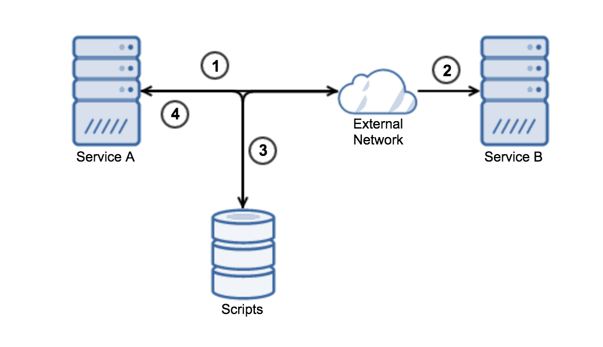

Readable, easy to understand/purpose, fun, About composers
Alex Soto Red Hat Engineer
Open Source Advocate
@alexsotob
JUnit Test
@Test
public void should_find_composer_by_name() {
// Given:
Composers composers = new Composers();
// When:
final Composer mozart = composers.findComposerByName("Wolfgang Amadeus Mozart");
// Then:
assertEquals("Wolfgang Amadeus Mozart", mozart.getName());
assertEquals(Era.CLASSICAL, mozart.getEra());
assertEquals(LocalDate.of(1756, 1, 27), mozart.getBirthdate());
assertEquals(LocalDate.of(1791, 12, 5), mozart.getDied());
}
Should, GivenWhenThen BDD, assertEquals and collections, Snowball
Hamcrest
Improves readibility, onion
Hamcrest Test
import static org.hamcrest.CoreMatchers.equalTo;
import static org.hamcrest.CoreMatchers.is;
import static org.hamcrest.text.IsEqualIgnoringWhiteSpace.equalToIgnoringWhiteSpace;
@Test
public void should_find_composer_by_name() {
// Given:
Composers composers = new Composers();
// When:
final Composer mozart = composers.findComposerByName("Wolfgang Amadeus Mozart");
// Then:
assertThat(mozart.getName(), is(equalToIgnoringWhiteSpace("Wolfgang Amadeus Mozart")));
assertThat(mozart.getEra(), is(equalTo(Era.CLASSICAL)));
assertThat(mozart.getBirthdate(), is(equalTo(LocalDate.of(1756, 1, 27))));
assertThat(mozart.getDied(), is(equalTo(LocalDate.of(1791, 12, 5))));
}
Hamcrest Test
import static org.hamcrest.CoreMatchers.hasItem;
import static org.hamcrest.collection.IsCollectionWithSize.hasSize;
@Test
public void should_find_operas_by_composer_name() {
// Given:
Composers composers = new Composers();
// When:
final List operas = composers.findOperasByComposerName("Ludwig van Beethoven");
// Then:
final Opera fidelio = Composers.OperaFactory
.createOpera("Fidelio")
.language(Language.GERMAN).librettist("Georg Friedrich Treitschke")
.roles("Florestan", "Leonore", "Rocco").build();
assertThat(operas, hasSize(1));
assertThat(getOperaNames(operas), hasItem("Fidelio"));
assertThat(operas, hasItem(fidelio));
}
Developers needs to remember, no IDE, depends on equals, snowball
AssertJ
best of hamcrest and fixes wrong things IDE friendly, DSL approach
AssertJ Example
import static org.assertj.core.api.Assertions.assertThat;
@Test
public void should_find_composer_by_name() {
// Given:
Composers composers = new Composers();
// When:
final Composer mozart = composers.findComposerByName("Wolfgang Amadeus Mozart");
// Then:
assertThat(mozart.getName())
.isEqualTo("Wolfgang Amadeus Mozart");
assertThat(mozart.getBirthdate())
.isEqualTo(LocalDate.of(1756, 1, 27));
assertThat(mozart).isEqualToComparingFieldByField(expectedMozart);
assertThat(mozart).isEqualToIgnoringNullFields(expectedMozart);
}
AssertJ Collections Example
@Test
public void should_find_operas_by_composer_name() {
// Given:
Composers composers = new Composers();
// When:
final List operas = composers.findOperasByComposerName("Wolfgang Amadeus Mozart");
// Then:
assertThat(operas)
.hasSize(2)
.extracting(Opera::getName)
.containsExactlyInAnyOrder("Die Zauberflöte", "Don Giovanni");
}
AssertJ Soft Assertions
@Test
public void should_find_composer_by_name_soft_assertions() {
// Given:
Composers composers = new Composers();
// When:
final Composer mozart = composers.findComposerByName("Wolfgang Amadeus Mozart");
// Then:
SoftAssertions.assertSoftly(softly -> {
softly.assertThat(mozart.getName()).isEqualTo("Wolfgang Amadeus Mozart");
softly.assertThat(mozart.getEra()).isEqualTo(Era.CLASSICAL);
softly.assertThat(mozart.getBirthdate()).isEqualTo(LocalDate.of(1756, 1, 27));
softly.assertThat(mozart.getDied()).isEqualTo(LocalDate.of(1791, 12, 5));
});
}
Try/Catch
@Test
public void should_throw_exception_if_composer_not_found() {
// Given:
Composers composers = new Composers();
// When:
try {
final Composer salieri = composers.findComposerByName("Antonio Salieri");
fail();
} catch (IllegalArgumentException e) {
// Then:
assertEquals("Composer Antonio Salieri is not found", e.getMessage());
}
}
JUnit
@Test(expected = IllegalArgumentException.class)
public void should_throw_exception_if_composer_not_found_version_2() {
// Given:
Composers composers = new Composers();
// When:
final Composer salieri = composers.findComposerByName("Antonio Salieri");
}
Not know who throws, nor if it is the expected one, break BDD
JUnit Rule
@Rule
public ExpectedException thrown = ExpectedException.none();
@Test
public void should_throw_exception_if_composer_not_found_version_3() {
// Given:
Composers composers = new Composers();
// When:
thrown.expect(IllegalArgumentException.class);
final Composer salieri = composers.findComposerByName("Antonio Salieri");
}
AssertJ Exceptions
@Test
public void should_throw_exception_if_composer_not_found_version_3() {
// Given:
Composers composers = new Composers();
// When:
// Then:
assertThatThrownBy(() -> composers.findComposerByName("Antonio Salieri"))
.isInstanceOf(IllegalArgumentException.class)
.withFailMessage("Composer Antonio Salieri is not found");
// When:
Throwable thrown = catchThrowable(() -> composers.findComposerByName("Antonio Salieri"));
// Then:
assertThat(thrown).isInstanceOf(IllegalArgumentException.class)
.withFailMessage("Composer Antonio Salieri is not found");
Benefits of AssertJ
IDE friendly
Assertions Generation
Integration with Guava, Joda, DB, Neo4j and Swing
Plugin CLI, Gradle, IDE, Maven
Don't Sleep
Not really a unit test but int. test, sleep(500...1000), UI most time, JMS, reactive
Asynchronous Call
@Test
public void should_play_operas() throws InterruptedException {
// Given:
final Opera nozzeDiFigaro = ...;
Gramophone gramophone = new Gramophone();
// When:
gramophone.play(nozzeDiFigaro);
// Then:
TimeUnit.SECONDS.sleep(3);
assertThat(gramophone.getCurrentOpera()).isEqualTo(nozzeDiFigaro);
}
Awaitility is a DSL that allows you to express expectations of an asynchronous system
Awaitility Example
@Test
public void should_play_operas_version_2() {
// Given:
final Opera nozzeDiFigaro = Composers.OperaFactory
.createOpera("Le Nozze di Figaro")
.language(Language.ITALIAN).librettist("Lorenzo Da Ponte")
.roles("Count Almaviva", "Countess Rosina", "Susanna", "Figaro")
.build();
Gramophone gramophone = new Gramophone();
// When:
gramophone.play(nozzeDiFigaro);
// Then:
await().atMost(5, TimeUnit.SECONDS).until(gramophone::isPlaying);
assertThat(gramophone.getCurrentOpera()).isEqualTo(nozzeDiFigaro);
}
JAX-RS Async
import static org.mockito.Mockito.mock;
import static org.mockito.Mockito.verify;
// public void composersInfoAsync(@Suspended final AsyncResponse asyncResponse,
// @PathParam("composer") String composer) {}
@Test
public void should_get_composer_and_image_async() {
// Then:
given().ignoreExceptions()
.await().atMost(10, TimeUnit.SECONDS)
.until(() -> {
verify(asyncResponse).resume(responseArgumentCaptor.capture());
});
final ComposersResourceAsync.ComposerInfo composerInfo = responseArgumentCaptor.getValue();
assertThat(composerInfo.getImageUrl()).hasHost("localhost")
.hasPath("/images/Wolfgang+Amadeus+Mozart.jpg");
}
Benefits of Awaitility
Deadlock Detection
Pollings: Fixed, Fibonacci, Iterative, Custom
Simple Library
REST API
REST (Xml, JSon), Move forward to a black box
GET /Ludwig+van+Beethoven
{
"name": "Ludwig van Beethoven",
"era": "ROMANTIC",
"birthdate": {
}
},
"died": {
},
"operas": [
{
"name": "Fidelio",
"librettist": "Georg Friedrich Treitschke",
"language": "GERMAN",
"roles": [
"Rocco",
"Leonore",
"Florestan"
]
}
]
}
HttpClient Example
@Test
public void should_find_composer() throws IOException, URISyntaxException {
// Given:
URIBuilder uriBuilder = new URIBuilder("http://localhost:8080/");
uriBuilder.setPath("Ludwig van Beethoven");
// When:
final Content bodyContent = Request.Get(uriBuilder.build())
.execute().returnContent();
String body = bodyContent.asString();
// Then:
assertThat(body).contains("\"name\":\"Ludwig van Beethoven\"")
.contains("\"librettist\":\"Georg Friedrich Treitschke\"");
}
WebDriver Example
// Given:
WebDriver browser = new FirefoxDriver();
URIBuilder uriBuilder = new URIBuilder("http://localhost:8080/");
uriBuilder.setPath("Ludwig van Beethoven");
browser.navigate().to(uriBuilder.build());
assertThat(browser.getPageSource()).contains("\"name\":\"Ludwig van Beethoven\"");
Testing and validating REST services
REST-assured Example
@Test
public void should_find_composer() {
given()
.when()
.get("{composer}", "Ludwig van Beethoven")
.then()
.assertThat()
.body("name", is("Ludwig van Beethoven"))
.body("operas.size()", is(1))
.body("operas.name", hasItems("Fidelio"));
}
REST-assured Example
@Test
public void should_insert_composer() {
Composer composer = ....;
given()
.param("parameter1", "parameterValue")
.body(composer)
.when()
.post()
.then()
.assertThat()
.statusCode(201);
}
REST-assured Request Logging
given().log().all(). .. // Log all request specification details including parameters, headers, body
given().log().params(). .. // Log only the parameters of the request
given().log().body(). .. // Log only the request body
given().log().headers(). .. // Log only the request headers
given().log().cookies(). .. // Log only the request cookies
given().log().method(). .. // Log only the request method
given().log().path(). .. // Log only the request path
Chunks of bytes, maybe not useful at all, just debugging
REST-assured Response Logging
get("/x").then().log().ifError()
get("/x").then().log().all()
given().log().ifValidationFails()
get("/x").then().log().ifStatusCodeIsEqualTo(302)
given().config(RestAssured.config()
.logConfig(logConfig().enableLoggingOfRequestAndResponseIfValidationFails())
)
REST-assured Request Specification
.get("http://example.com/{composer}", "Ludwig van Beethoven")
RequestSpecBuilder builder = new RequestSpecBuilder();
builder.setBaseUri("http://example.com");
given().spec(builder.build())...Reuse same configuration across all requests, expectations, path, root, auth, port, host, params, headers
REST-assured Auth
given().auth().oauth2(accessToken).when()...
given().auth().form("John", "Doe", springSecurity().withCsrfFieldName("_csrf")).when()...
given().auth().basic("username", "password").when()...
Basic, Digest, Form, CSRF token, OAUTH, Custom
More Features
Custom Parsers
SSL support (.relaxedHTTPSValidation() )
Filters
JSON Schema Validation
(Micro) Services Dependencies
Test code that connect to 3rd party or internal services
Problems with Services
Network Down
Service Down
Limits on API
Component not in Control
Micro-Services Dependencies Hell
Possible Solutions
Mock Http Component
Stub/Fake Http Server
Service Virtualization
Mock not full stack, not reflect the reality, it is about your knowledge
Service Virtualization
Light Proxy, intercepts requests

first call nothing real service and way back persisted
Implementation in Go, integrated with Java, connection proxy modification
Hoverfly Example
@ClassRule
public static HoverflyRule hoverflyRule = HoverflyRule.inCaptureOrSimulationMode("getcomposers.json");
@Test
public void should_get_composers_from_composers_microservice() throws URISyntaxException, IOException {
// Given:
ComposersGateway composersGateway = new ComposersGateway("example.com", 8081);
// When:
Composer composer = composersGateway.getComposer("Ludwig van Beethoven");
// Then:
assertThat(composer.getName()).isEqualTo("Ludwig van Beethoven");
}
Hoverfly File Example
{
"data" : {
"pairs" : [ {
"request" : {
"path" : "/Ludwig van Beethoven",
"method" : "GET",
"destination" : "example.com:8081",
...
}
"response" : {
"status" : 200,
"body" : "{\"name\":\"Ludwig van Beethoven\",}",
"encodedBody" : false,
"headers" : {
"Connection" : [ "keep-alive" ],
...
}
}
}
}
Testing Containers
//assuming Dockerfile or docker-compose already created
docker build -t myorg/myservice:1.0.0 .
docker run --rm -ti -p 8080:8080 myorg/myservice:1.0.0
docker-compose up
// Run your test IDE or build tool
mvn clean test
docker-compose stop
manual step, although build tool or script not natural to developer, not debug, select exactly test method, IP problems (multiple users)
JUnit extension, manages everything, suite level, method level, connect to existing, parallel, IP
Arquillian Cube Example
@RunWith(Arquillian.class)
public class HelloWorldTest {
@ArquillianResource
@DockerUrl(containerName = "helloworld", exposedPort = 8080)
RequestSpecBuilder requestSpecBuilder;
@Test
public void should_receive_ok_message() {
RestAssured
.given()
.spec(requestSpecBuilder.build())
.when()
.get()
.then()
.assertThat().body("status", equalTo("OK"));
}
}
Arquillian Cube Example
@RunWith(Arquillian.class)
public class HelloWorldTest {
@DockerContainer
Container pingpong = Container.withContainerName("pingpong")
.fromImage("jonmorehouse/ping-pong")
.withPortBinding(8080)
.build();
@Test
public void should_return_ok_as_pong() throws IOException {
String response = ping(pingpong.getIpAddress(), pingpong.getBindPort(8080));
assertThat(response).containsSequence("OK");
}
}
Arquillian Cube K8s Example
@RunWith(Arquillian.class)
public class HelloWorldTest {
@ArquillianResource
KubernetesClient client;
@Named("hello-world-service")
@PortForward
@ArquillianResource
URL url;
@Test
public void testRunningPodStaysUp() throws Exception {
assertThat(client).deployments().pods().isPodReadyForPeriod();
}
}
Ready within a time period (30 seconds by default), then that the pod keeps being Ready for a period (defaults to 10 seconds).
Conclusions
From low-level to high-level
Not just for Micro-Services
Improves Readibility of Tests
The purpose of automated testing is to enable change . Verifying correctness is just a nice side-effect .Jeremy Norris